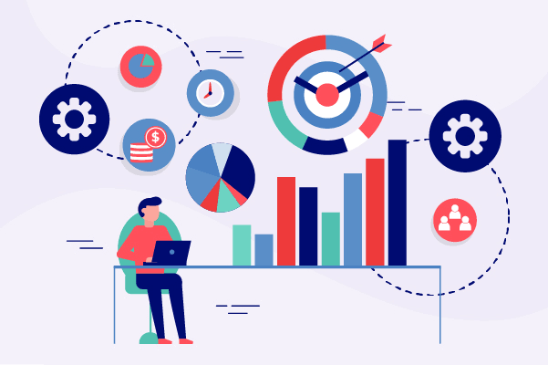

Proyectos Digitales
Desarrollo Web & Apps
Diseño y desarrollo sitios web y aplicaciones a medida que combinan funcionalidad robusta con una experiencia visual cuidada. Desde landing pages de alta conversión hasta portales corporativos y plataformas web complejas, cada proyecto está construido con tecnologías modernas, código limpio y enfoque en rendimiento.
Landing Pages & Corporativo
Sitios rápidos, responsivos y optimizados para SEO que generan resultados reales.
E-Commerce
Tiendas online funcionales con pasarelas de pago y gestión de inventario.
Plataformas Web a Medida
Aplicaciones web con lógica de negocio específica en Python, PHP o JavaScript.
Diseño Responsivo
Experiencia perfecta en móvil, tablet y escritorio en todos los navegadores.

Integración de IA & Chatbots
Integro inteligencia artificial en canales de comunicación y flujos de trabajo empresariales. Desarrollo chatbots conversacionales para WhatsApp, Telegram e Instagram que entienden el contexto, automatizan respuestas y mejoran la experiencia del cliente, usando Gemini API, OpenAI y otras plataformas de IA generativa.
Chatbots WhatsApp
Bots inteligentes con WhatsApp Business API para atención automática 24/7.
Bots Telegram
Chatbots multi-propósito: atención, notificaciones, comandos y flujos automatizados.
Gemini API / OpenAI
Integración de modelos de lenguaje para respuestas inteligentes y contextuales.
Flujos Conversacionales
Diseño de árboles de decisión y flujos de conversación para cada caso de uso.
Diseño UI/UX
Creo interfaces digitales que se sienten intuitivas y se ven bien. El diseño UI/UX no es solo estética: es estructurar la información para que los usuarios lleguen a su objetivo sin fricción. Trabajo desde la fase de wireframes y prototipado hasta la entrega de diseños listos para desarrollo.
Wireframes & Prototipado
Estructura visual de la interfaz antes de escribir una línea de código.
Diseño Visual
Sistemas de diseño con tipografía, colores y componentes consistentes.
UX Research
Análisis de flujos de usuario y puntos de fricción para mejorar la experiencia.
Diseño Responsivo
Interfaces adaptadas para cualquier dispositivo con coherencia visual.
Infraestructura TI
Administro y mantengo infraestructura tecnológica on-premise y en la nube para empresas que necesitan alta disponibilidad y operación continua. Desde la gestión de servidores y redes hasta la administración de Microsoft 365 y Active Directory, aseguro que los sistemas críticos funcionen sin interrupciones.
Servidores & Virtualización
Configuración, mantenimiento y monitoreo de servidores físicos y virtuales.
Microsoft 365 & Azure AD
Gestión de usuarios, licencias, SharePoint, Teams y políticas de seguridad.
Redes & Conectividad
Configuración de redes LAN/WAN, switches, routers y VPN corporativas.
Soporte N2/N3
Resolución de incidencias complejas con foco en SLA y continuidad operativa.
Automatización de Procesos
Identifico tareas repetitivas y las convierto en flujos automáticos que ahorran tiempo y reducen errores. Trabajo con Python para scripts de automatización, integración de APIs, procesamiento de datos y conexión entre sistemas como ERP Odoo, plataformas web y herramientas empresariales.
Scripts Python
Automatización de tareas: reportes, procesamiento de datos, notificaciones y más.
Integración de APIs
Conexión entre sistemas heterogéneos mediante REST APIs y webhooks.
ERP Odoo
Integración de módulos Odoo con portales web y automatización de flujos de negocio.
Procesamiento de Datos
ETL, transformación de datos y generación de reportes automatizados en Excel.

Consultoría Tecnológica
Ayudo a empresas y emprendedores a tomar mejores decisiones tecnológicas: qué herramienta adoptar, cómo estructurar su infraestructura digital, cómo incorporar IA en sus procesos o cómo diseñar una arquitectura de software escalable. Traducir el lenguaje técnico en decisiones de negocio concretas.
Transformación Digital
Hoja de ruta tecnológica para modernizar procesos y herramientas empresariales.
Selección de Herramientas
Evaluación y recomendación de software, SaaS, ERP y plataformas cloud.
Auditoría TI
Revisión de sistemas, seguridad, backups y procedimientos de TI existentes.
Proyectos de IA
Asesoría para incorporar inteligencia artificial de forma práctica y rentable.